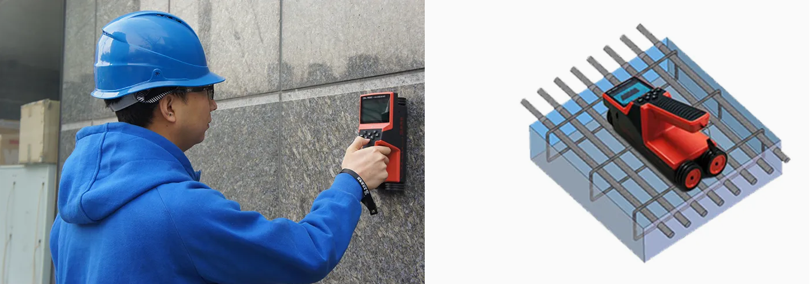

What to prepare before CRTC arrives to locate reinforcement and measure concrete cover with the Novatest Novascan R660, so that the survey is accurate and the visit is not wasted.
The Novascan R660 is a rebar detector. A probe is moved over the concrete surface and picks up the steel beneath it. It can locate longitudinal bars and stirrups, measure the thickness of concrete cover and estimate bar diameter. The results are used to check cover against the specification, to map reinforcement in existing structures, and to avoid bars before coring or drilling.
The survey is non-destructive and quick, but the readings are affected by the surface, nearby metal, interference and the density of the reinforcement. Good preparation improves the result.
Tick items as you complete them. Your progress is saved in this browser.
Keep welding, large motors and other strong electrical equipment away from the scan area while readings are taken. Interference can disturb the signal.
Search, or filter by topic.
It locates longitudinal bars and stirrups, and measures the concrete cover and estimates bar diameter. Depending on the survey, CRTC may take spot readings, line scans or grid scans.
Not usually. Tell CRTC what finish is on the surface and how thick it is, so cover can be stated to the concrete or to the finish as your specification requires. Metallic finishes can disturb the reading.
The instrument works with an electromagnetic field. Steel scaffolding, tools, mesh, plates and conduits near the probe distort the field and give false readings or hide bars.
Standing water, mud and loose debris make scanning difficult and should be removed. A clean, reasonably smooth surface lets the probe move steadily and gives better results.
The instrument is normally battery powered, but a power socket for charging is helpful on long surveys. Confirm with CRTC.
Any instrument of this kind has a limited depth range, and accuracy falls as depth increases or when bars are close together. CRTC will advise whether another method is needed for deep or congested reinforcement.
Only steel bars within its depth range. It will not detect non-metallic reinforcement, and steel fibres, magnetic aggregates and some coated or stainless bars can affect readings. Tell CRTC what you know.
Yes, and it should be. Scanning first lets locations be moved to avoid bars, which protects the structure and gives better cores.
It depends on the grid spacing, access and congestion of the reinforcement. Ask CRTC for an estimate for your site.
The areas scanned, bar positions and spacing, cover readings, estimated bar diameters, the finish thickness, the instrument and settings used, and notes on limitations.
Accuracy depends on cover depth, bar spacing and bar size. In doubtful cases, a bar can be exposed at a few points to check the readings.
No. It locates steel and measures cover, but it does not indicate corrosion. Other tests are needed for that.
No matching questions. Try another word.
This guideline summarizes good practice for electromagnetic rebar scanning and the instrument manufacturer’s instructions. It does not replace those instructions or your project specification, which govern if they differ. Please confirm requirements with CRTC before the survey. Questions: CRTC · [email] · [phone] · [address]